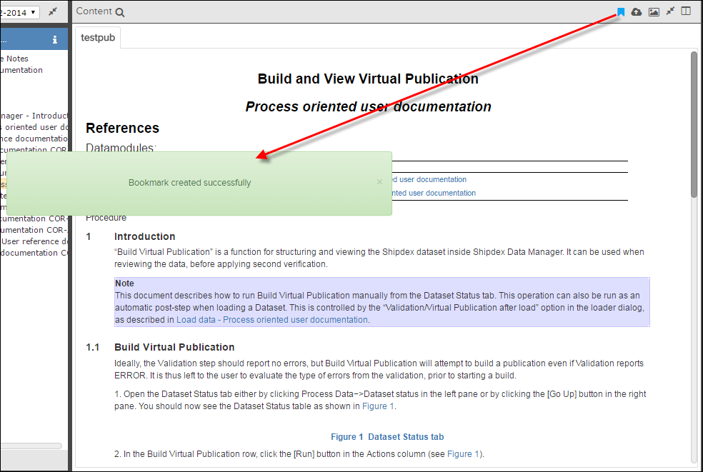
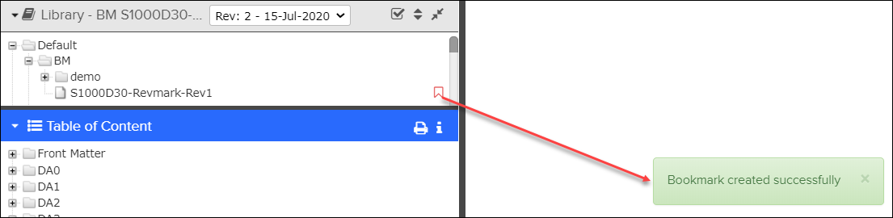
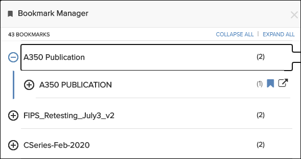

Bookmarks are links that makes it easy to get back to documents you want to view later. In
Pinpoint, you can create bookmarks at the data module level from the
Content pane or the publication level from the
Library
pane. You can also
create bookmarks for symbolic link publications.
It
is not possible to bookmark content within a data module or publication. Bookmarks are
private and can only be seen by the user that created them. However, they are stored on the
server, which means that a user can access previously stored bookmarks from different
computers.
Note: Publication level bookmarks are not supported for ATA publications. The
 Add Bookmark
Add Bookmark icon will not appear in the
Library page for this type of
publication.
Note: This
feature is not available for HTML publications.
Bookmarks always resolve to the latest revision. When a revision is published and released,
existing bookmarks launch the content to the new revision. If you want to view the older
revision, you must select that revision.
Note: The bookmark feature is enabled by default, but it is possible to hide it by removing or
leaving the "bookmarkService" parameter empty in the pp.app.conf.json
file on the config directory.
If the bookmark feature is enabled, you will see a bookmark icon in the application's
Content pane and when you hover over the name of a publication in the
Library pane:

Bookmark Icon - Content Pane

Bookmark Icon - Library Pane
Managing Bookmarks
Bookmarks are created and deleted in the context of the document or publication you are
viewing.
- In the Content pane, you will see a
Bookmark toggle icon.
- In the Library pane, you will see a
Bookmark toggle icon when you hover over a publication name.
To bookmark the document you are viewing, just click this icon. The bookmark icon then
changes color, and a confirmation message will flash on the screen to let you know that the
bookmark is created.

Bookmark Created Successfully Confirmation Message (Content Pane)

Bookmark Created Successfully Confirmation Message (Library Pane)
To remove the bookmark, click the toggle icon again. A confirmation message lets you know
that the bookmark is deleted and the icon changes color again. For example:
Accessing/Managing Bookmarks in Bookmark
Manager
Click the
Bookmark Manager icon in the
Action bar to open
the
Bookmark Manager dialog, which contains a list of all publications
with bookmarks.
Note: The
Bookmark Manager icon can be located in the
 More
More drop-down menu if your page width is less than or equal to 1280
pixels.

Bookmark Manager Dialog
Select to view the bookmarks for all publications. You can
select the icon to view only bookmarks for that publication.
Select
to hide the bookmarks for all publications. You can select the
icon to collapse only bookmarks for that
publication.
Bookmarks created at the publication level have an Open in new icon located to the right of the bookmark icon. Click
this icon to open the publication in a new
window.
Note: When
you click a bookmark for a symbolic link publication, the original (target) publication
opens.
The total number of bookmarks displays below the
Bookmark Manager dialog name. The number of bookmarks in each
publication displays in parentheses in the right side of the dialog. Click a link to open a
document in the
Content pane.
Note: If you hover over the publication
name, the path where the document is located appears.
If you want to delete a
bookmark, click the
 Remove Bookmark
Remove Bookmark icon in the right side of the dialog. The bookmark
changes color, and a confirmation message flashes on the screen to show that the bookmark is
removed. For example: